library(mosaic)
library(latticeExtra)
set.seed(2000)1 記述統計とグラフ
与えられているデータについて, 数字として縮約したり, 表にまとめたり, 図であらわしたりする. このようなことを R で簡単に利用可能であることを示す.
data(CPS85)
summary(CPS85)
#> wage educ race sex hispanic south
#> Min. : 1.000 Min. : 2.00 NW: 67 F:245 Hisp: 27 NS:378
#> 1st Qu.: 5.250 1st Qu.:12.00 W :467 M:289 NH :507 S :156
#> Median : 7.780 Median :12.00
#> Mean : 9.024 Mean :13.02
#> 3rd Qu.:11.250 3rd Qu.:15.00
#> Max. :44.500 Max. :18.00
#>
#> married exper union age sector
#> Married:350 Min. : 0.00 Not :438 Min. :18.00 prof :105
#> Single :184 1st Qu.: 8.00 Union: 96 1st Qu.:28.00 clerical: 97
#> Median :15.00 Median :35.00 service : 83
#> Mean :17.82 Mean :36.83 manuf : 68
#> 3rd Qu.:26.00 3rd Qu.:44.00 other : 68
#> Max. :55.00 Max. :64.00 manag : 55
#> (Other) : 58inspect(CPS85)
#>
#> categorical variables:
#> name class levels n missing
#> 1 race factor 2 534 0
#> 2 sex factor 2 534 0
#> 3 hispanic factor 2 534 0
#> 4 south factor 2 534 0
#> 5 married factor 2 534 0
#> 6 union factor 2 534 0
#> 7 sector factor 8 534 0
#> distribution
#> 1 W (87.5%), NW (12.5%)
#> 2 M (54.1%), F (45.9%)
#> 3 NH (94.9%), Hisp (5.1%)
#> 4 NS (70.8%), S (29.2%)
#> 5 Married (65.5%), Single (34.5%)
#> 6 Not (82%), Union (18%)
#> 7 prof (19.7%), clerical (18.2%) ...
#>
#> quantitative variables:
#> name class min Q1 median Q3 max mean sd n missing
#> 1 wage numeric 1 5.25 7.78 11.25 44.5 9.024064 5.139097 534 0
#> 2 educ integer 2 12.00 12.00 15.00 18.0 13.018727 2.615373 534 0
#> 3 exper integer 0 8.00 15.00 26.00 55.0 17.822097 12.379710 534 0
#> 4 age integer 18 28.00 35.00 44.00 64.0 36.833333 11.726573 534 0データは, カテゴリカル変数と数量 (ニューメリック) 変数に分けられる. それぞれの変数についてどのように図示するかを示す.
1.1 カテゴリカル変数
データフレイム CPS85 の変数 sector を考える. これは業種を示すデータである. 詳しくは help(CPS85) を実行してヘルプをみていただきたい. それぞれの業種ごとの観測数を計測するには tally を実行する.
tally(~sector, data = CPS85)
#> sector
#> clerical const manag manuf other prof sales service
#> 97 20 55 68 68 105 38 83順序を変えるには以下のようにする.
sort(tally(~sector, data = CPS85), decreasing = TRUE)
#> sector
#> prof clerical service manuf other manag sales const
#> 105 97 83 68 68 55 38 205 番目の「その他 (other)」を最後にするには以下のようにする.
(tab <- sort(tally(~sector, data = CPS85), decreasing = TRUE)[c(1:4, 6:8, 5)])
#> sector
#> prof clerical service manuf manag sales const other
#> 105 97 83 68 55 38 20 68もしくはもとのデータで順序をつけるとよい.
df <- CPS85 |>
mutate(
sector = factor(
sector,
levels = c(
"prof",
"clerical",
"service",
"manuf",
"manag",
"sales",
"const",
"other"
)
)
)
tally(~sector, data = df)
#> sector
#> prof clerical service manuf manag sales const other
#> 105 97 83 68 55 38 20 68合計を示すにはオプション margins=TRUE を付け加える.
tally(~sector, data = CPS85, margins = TRUE)
#> sector
#> clerical const manag manuf other prof sales service
#> 97 20 55 68 68 105 38 83
#> Total
#> 534割合を示すにはオプション format='percent' を付け加える.
tally(~sector, data = CPS85, format = 'percent', margins = TRUE)
#> sector
#> clerical const manag manuf other prof sales
#> 18.164794 3.745318 10.299625 12.734082 12.734082 19.662921 7.116105
#> service Total
#> 15.543071 100.000000作図にはドット図もしくは棒グラフが適切であろう. 棒グラフは bargraph で実行できる.
gf_bar(~sector, data = CPS85)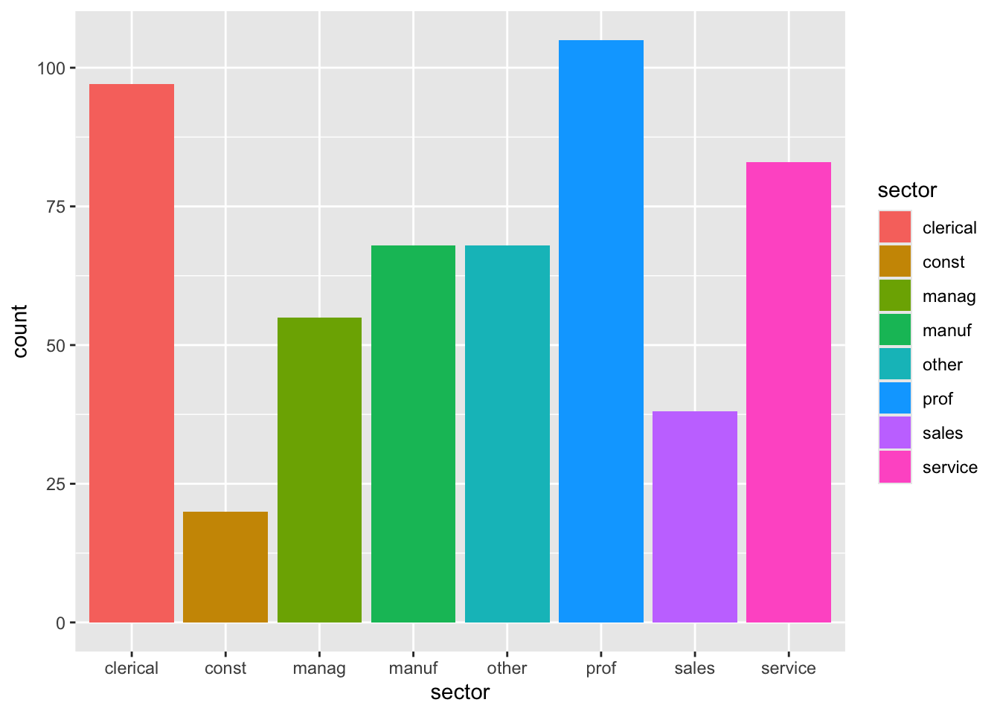
オプション fill=~sector をつけることでカラフルにできる.
gf_bar(~sector, fill = ~sector, data = CPS85)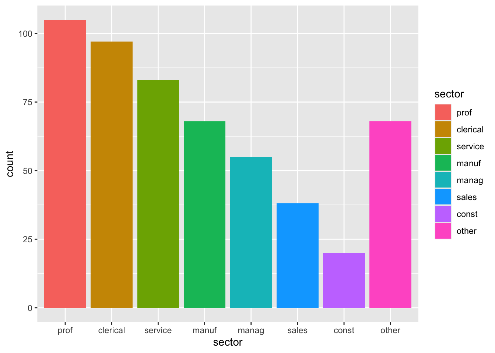
もしこの図を大きい順に並べ替えたり, 名前を変更するなら, データを変更するのがよい. さきに, その他を最後にあとは大きい順に並べ直したデータセット df を作成したので, それを用いると以下になる.
gf_bar(~sector, fill = ~sector, data = df)
縦と横を変更するには次のようにする.
gf_bar(~sector, fill = ~sector, data = df)
最後の other が一番上に位置していることに注意. 順序を逆にするには以下とする．
gf_bar(~sector, fill = ~sector, data = df) |>
gf_refine(scale_y_discrete(limits = rev(levels(df$sector))))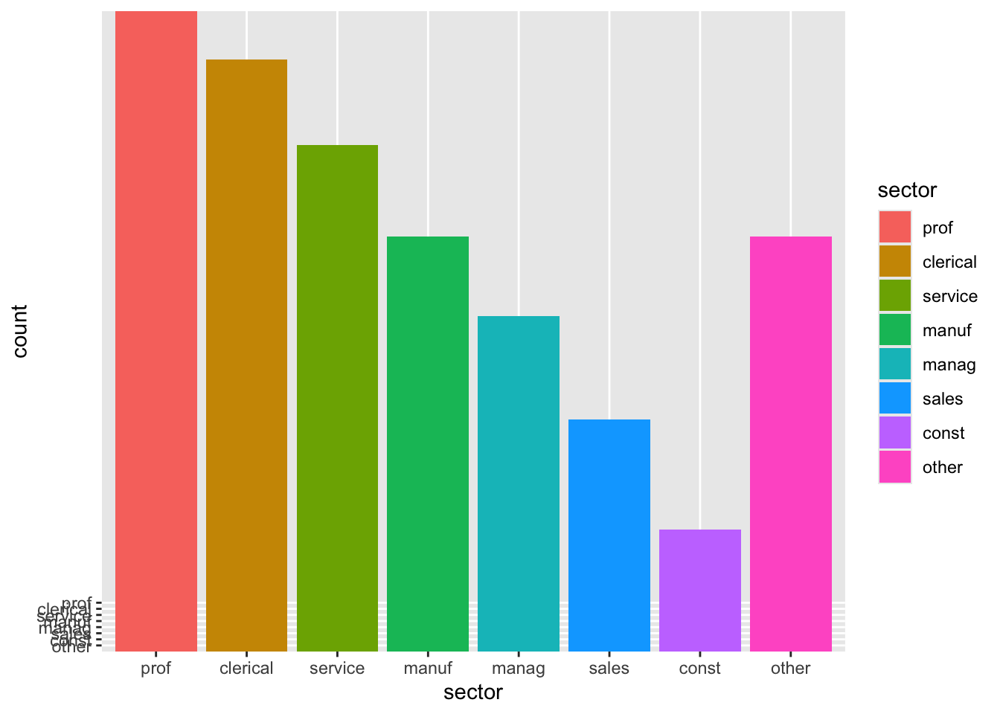
円グラフはあまり, 学術研究ではもちいないが, 基本グラフィクス pie を使えば良い.
tally(~sector, data = df, format = 'percent') |>
pie(clockwise = TRUE)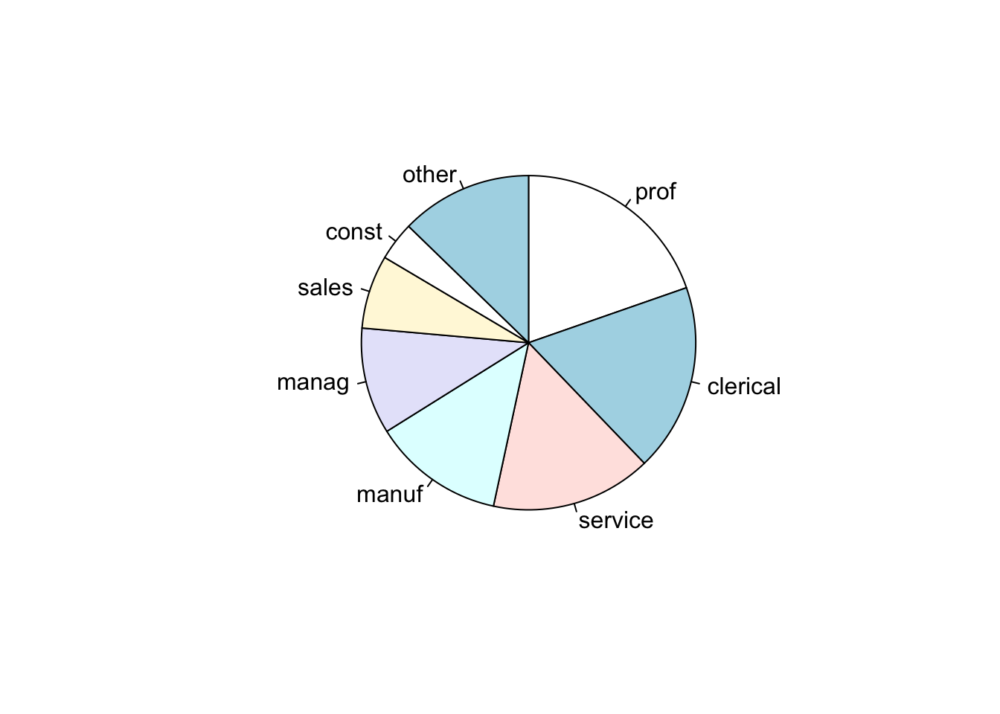
1.2 2 つのカテゴリカル変数
データフレイム CPS85 の変数 sector と sex を考える. 前者は業種を示すデータであり, 後者は性別を示すデータである. 2 つのカテゴリごとの観測数は以下のように実行する.
tally(sex ~ sector, data = CPS85)
#> sector
#> sex clerical const manag manuf other prof sales service
#> F 76 0 21 24 6 52 17 49
#> M 21 20 34 44 62 53 21 34セクターごとの男女の比率は以下のようになる.
tally(sex ~ sector, data = CPS85, format = "proportion", margin = TRUE)
#> sector
#> sex clerical const manag manuf other prof
#> F 0.78350515 0.00000000 0.38181818 0.35294118 0.08823529 0.49523810
#> M 0.21649485 1.00000000 0.61818182 0.64705882 0.91176471 0.50476190
#> Total 1.00000000 1.00000000 1.00000000 1.00000000 1.00000000 1.00000000
#> sector
#> sex sales service
#> F 0.44736842 0.59036145
#> M 0.55263158 0.40963855
#> Total 1.00000000 1.00000000縦と横を変えることも出来る.
tally(sector ~ sex, data = CPS85)
#> sex
#> sector F M
#> clerical 76 21
#> const 0 20
#> manag 21 34
#> manuf 24 44
#> other 6 62
#> prof 52 53
#> sales 17 21
#> service 49 34以下のコマンドと同じ結果になる.
tally(~ sector | sex, data = CPS85)
#> sex
#> sector F M
#> clerical 76 21
#> const 0 20
#> manag 21 34
#> manuf 24 44
#> other 6 62
#> prof 52 53
#> sales 17 21
#> service 49 34カテゴリーごとのグラフを実施するには以下を実行する.
gf_bar(~sector, fill = ~sex, data = CPS85)
同じパネルに男女ごとに重ねたヒストグラムになる.
オプション position = "dodge" を追加することで, 並べることもできる出来る.
gf_bar(~sector, fill = ~sex, position = "dodge", data = CPS85)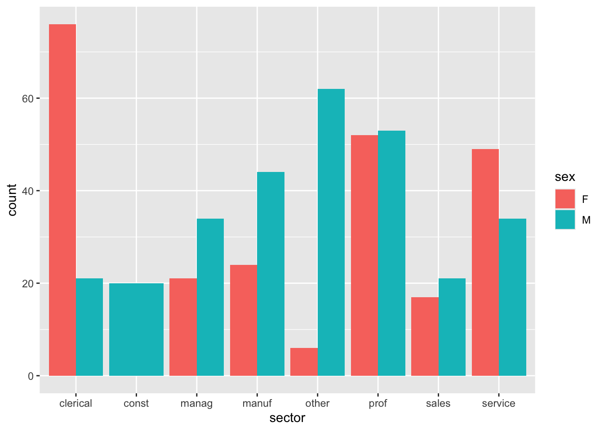
ただsectorがconstのときの女性がゼロなので表記がおかしくなっている.
オプション position = "fill" に変更することで, それぞれの部門の比率が表示される．
gf_bar(~sector, fill = ~sex, position = "fill", data = CPS85)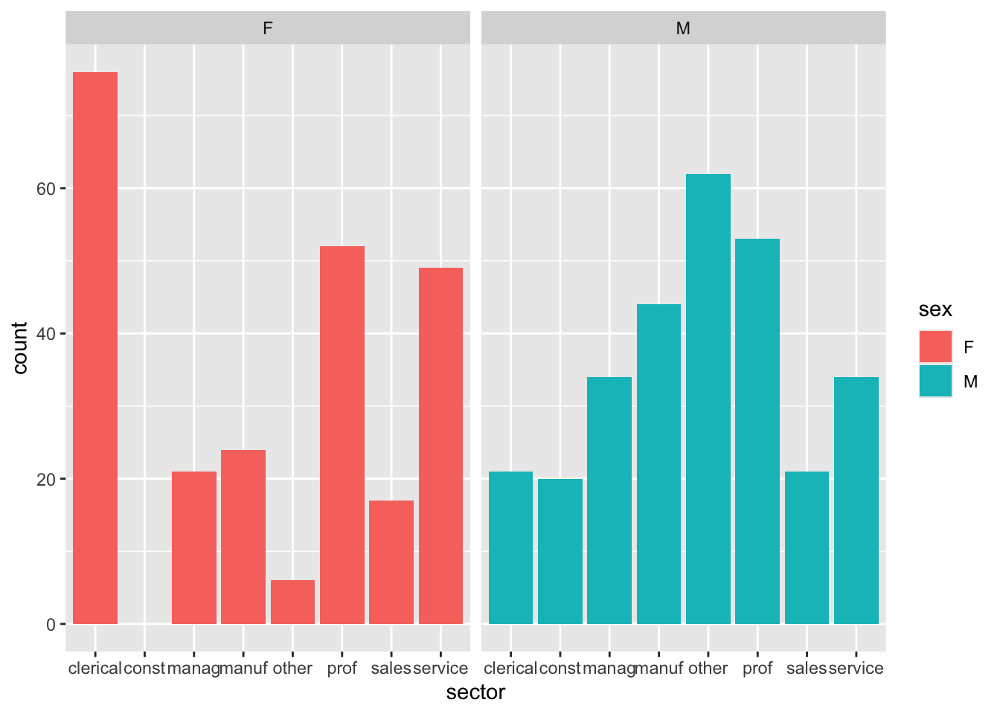
別々のパネルで表すには以下を実行するればよい.
gf_bar(~ sector | sex, fill = ~sex, data = CPS85)
1.3 数量変数
データフレイム CPS85 の変数 wage を考える. これは時間あたりの賃金を示す数量変数である.
1.3.1 特性値
標本平均 \[ \bar{x}=\frac{1}{N}\sum_{n=1}^N x_n \] は以下で計算できる.
mean(~wage, data = CPS85)
#> [1] 9.024064標本分散 \[ s_x^2=\frac{1}{N-1}\sum_{n=1}^N (x_n-\bar{x})^2 \] は以下で計算できる.
var(~wage, data = CPS85)
#> [1] 26.41032その平方根である標準偏差 \(s_x\) は以下で計算できる.
sd(~wage, data = CPS85)
#> [1] 5.139097これらを含めた特性値は favstats でまとめて表記できる.
favstats(~wage, data = CPS85)ここで min は最小値を意味し, max は最大値を意味し, n は観測数を意味する. また median は中央値を意味し, データを大きい順にならべて真ん中に来る値である. Q1 は第 1 四分位点であり, 25%に来る値であり, Q4 は第 3 四分位点であり, 75%に来る値である. 中央値は第 2 四分位点ともいえる. ここで中央値と平均と乖離があり分布が偏っていることが示唆される.
対数変換した変数だと中央値と平均値がほぼ同じで偏りがないことが示唆される.
favstats(~ log(wage), data = CPS85)1.3.2 作図
数量変数の作図はヒストグラムが代表的である.
gf_histogram(~wage, data = CPS85)
#> `stat_bin()` using `bins = 30`. Pick better value `binwidth`.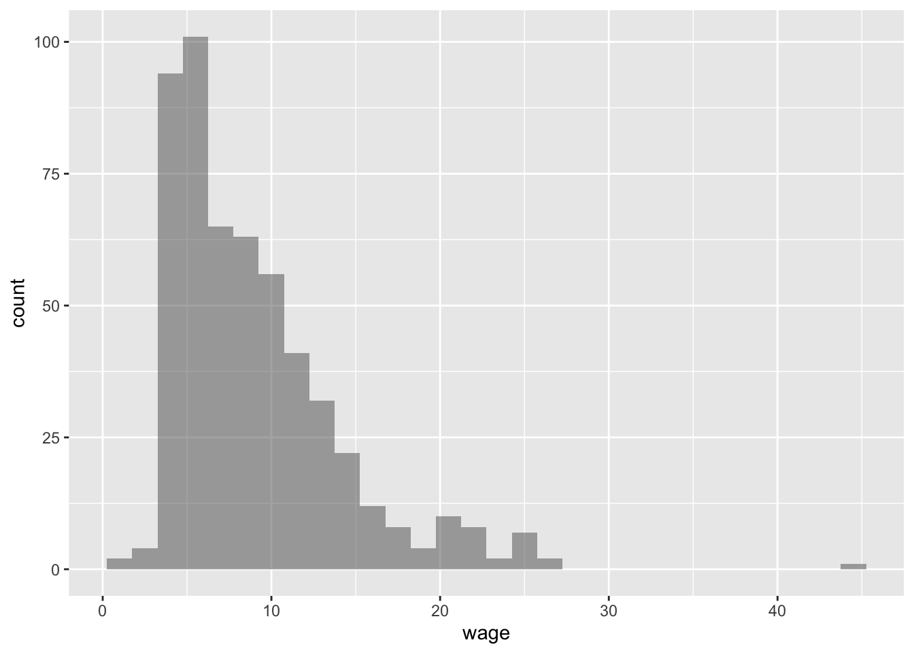
すこし左に偏っているので対数変換したデータを考える.
gf_histogram(~ log(wage), data = CPS85)
#> `stat_bin()` using `bins = 30`. Pick better value `binwidth`.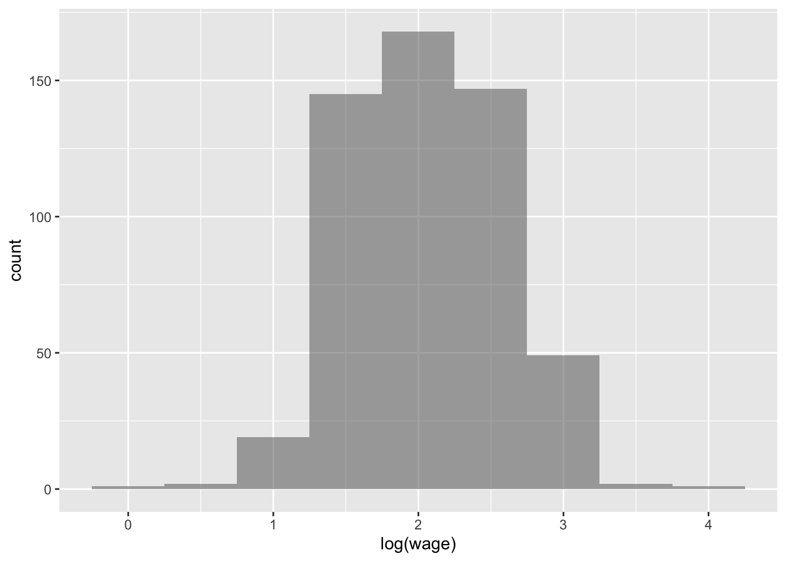
オプション binwidth を用いて幅を調節できる.
gf_histogram(~ log(wage), binwidth = 0.5, data = CPS85)
gf_histogram(~ log(wage), data = CPS85)
#> `stat_bin()` using `bins = 30`. Pick better value `binwidth`.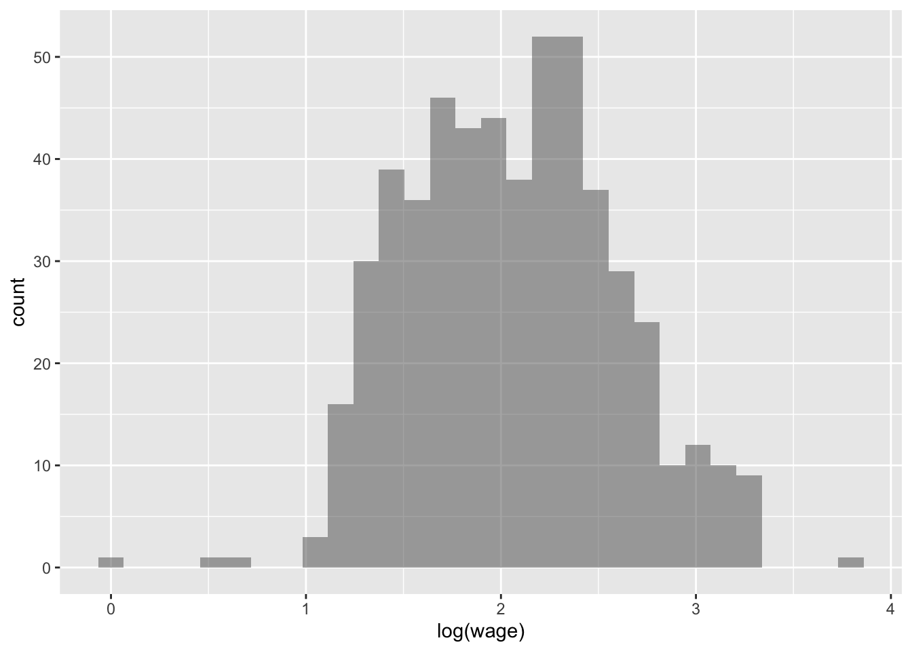
オプション binwidth を用いて幅を調節できる.
gf_histogram(~ log(wage), binwidth = 0.5, data = CPS85)
縦軸を密度に置き換えるには gf_dhistogram を用いる.
gf_dhistogram(~ log(wage), data = CPS85)
#> `stat_bin()` using `bins = 30`. Pick better value `binwidth`.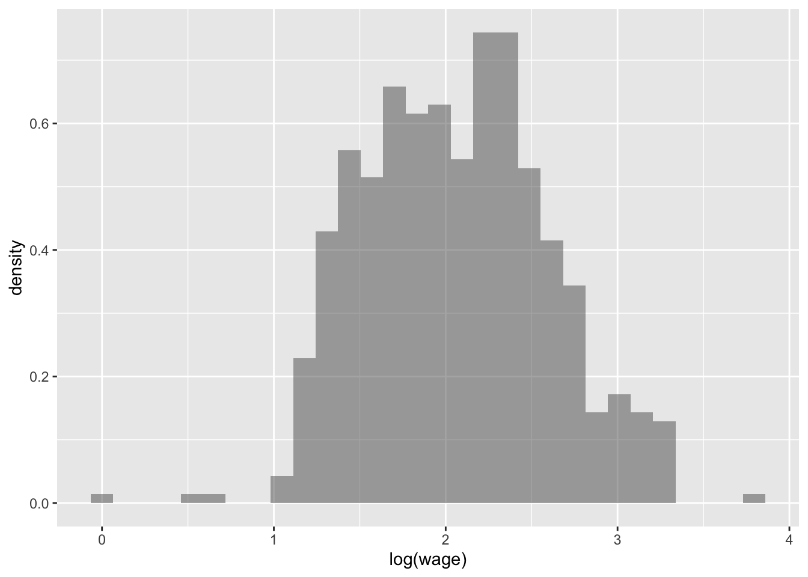
密度図にするには gf_density を用いる.
gf_density(~ log(wage), data = CPS85)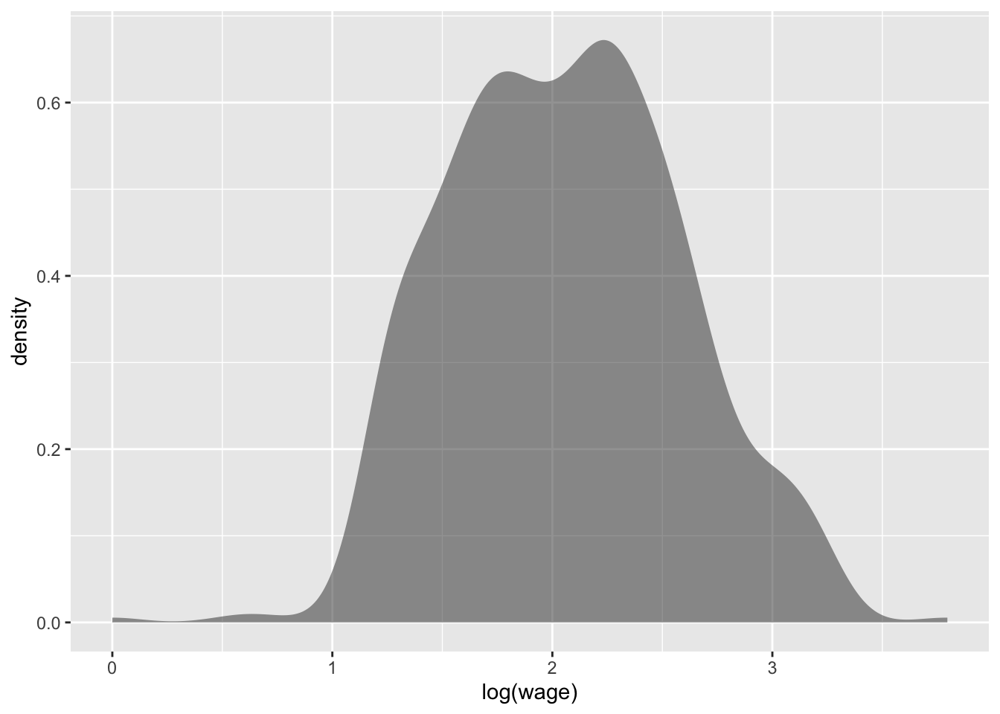
1.3.3 数量変数とカテゴリカル変数
データフレイム CPS85 の変数 wage および sex を考える. 前者は時間あたりの賃金を示す数量変数であり, 後者は性別を示すカテゴリカル変数である. カテゴリカル変数ごとの数量変数の結果は以下を実施すればよい.
favstats(log(wage) ~ sex, data = CPS85)これは以下でも同じ結果になる.
favstats(~ log(wage) | sex, data = CPS85)ヒストグラムによる作図は以下である.
gf_histogram(~ log(wage), fill = ~sex, data = CPS85)
#> `stat_bin()` using `bins = 30`. Pick better value `binwidth`.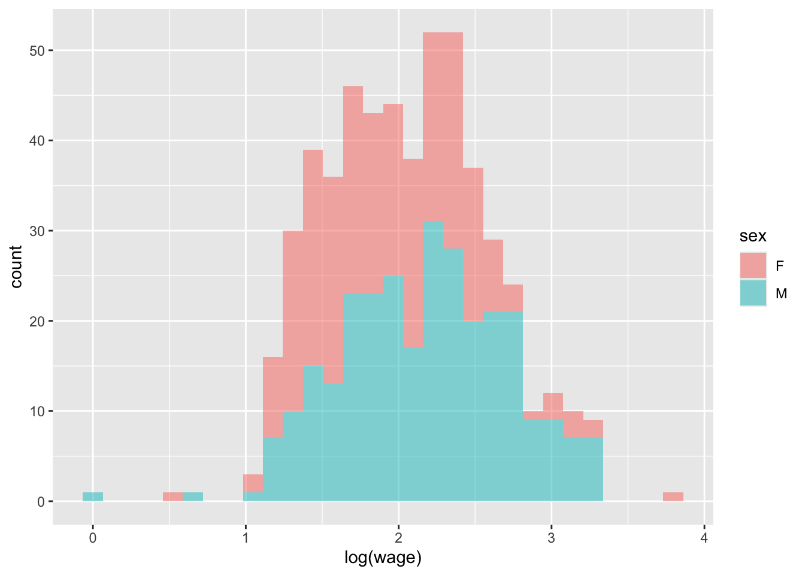
色別に積み上がっている.
別々のパネルで描くと以下になる.
gf_histogram(~ log(wage) | sex, fill = ~sex, data = CPS85)
#> `stat_bin()` using `bins = 30`. Pick better value `binwidth`.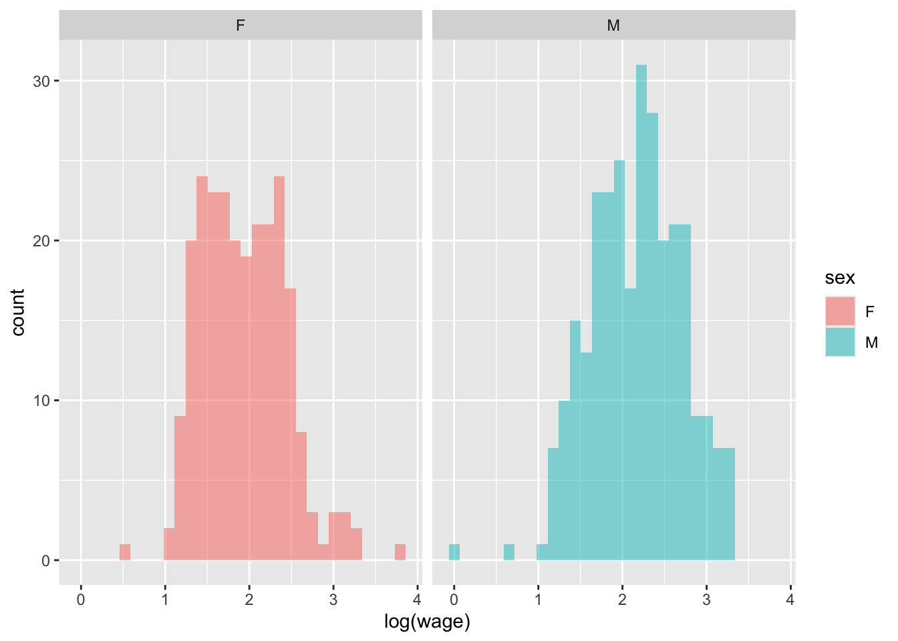
密度図による作図は以下である. 重ねるためにオプション alpha=0.5 をつけている．
gf_density(~ log(wage), fill = ~sex, alpha = 0.5, data = CPS85)
つみ上げるにはオプション position = "stack" をつける必要がある.
gf_density(~ log(wage), fill = ~sex, position = "stack", data = CPS85)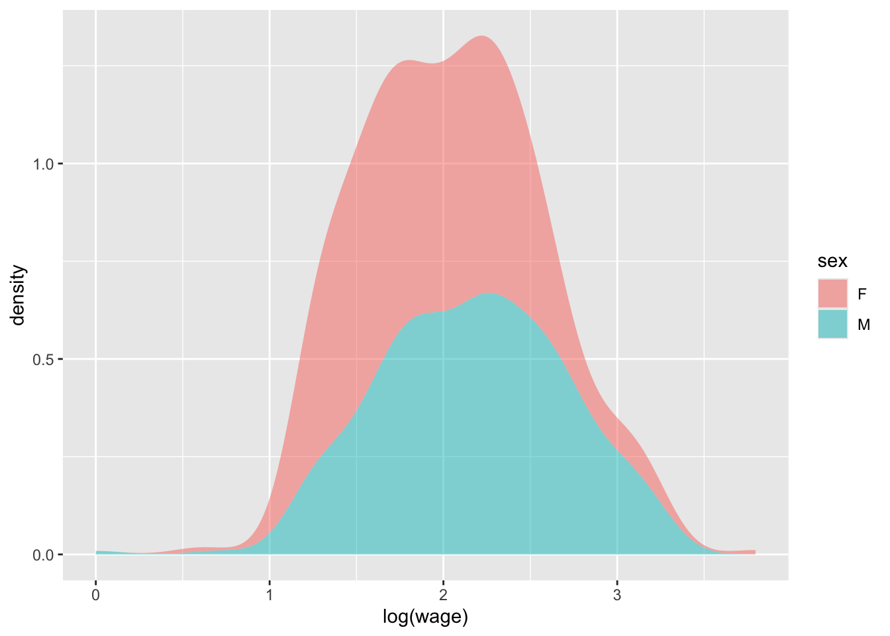
別々のパネルで描くと以下になる.
gf_density(~ log(wage) | sex, fill = ~sex, data = CPS85)
他にも箱ひげ図でも表せる.
gf_boxplot(log(wage) ~ sex, fill = ~sex, data = CPS85)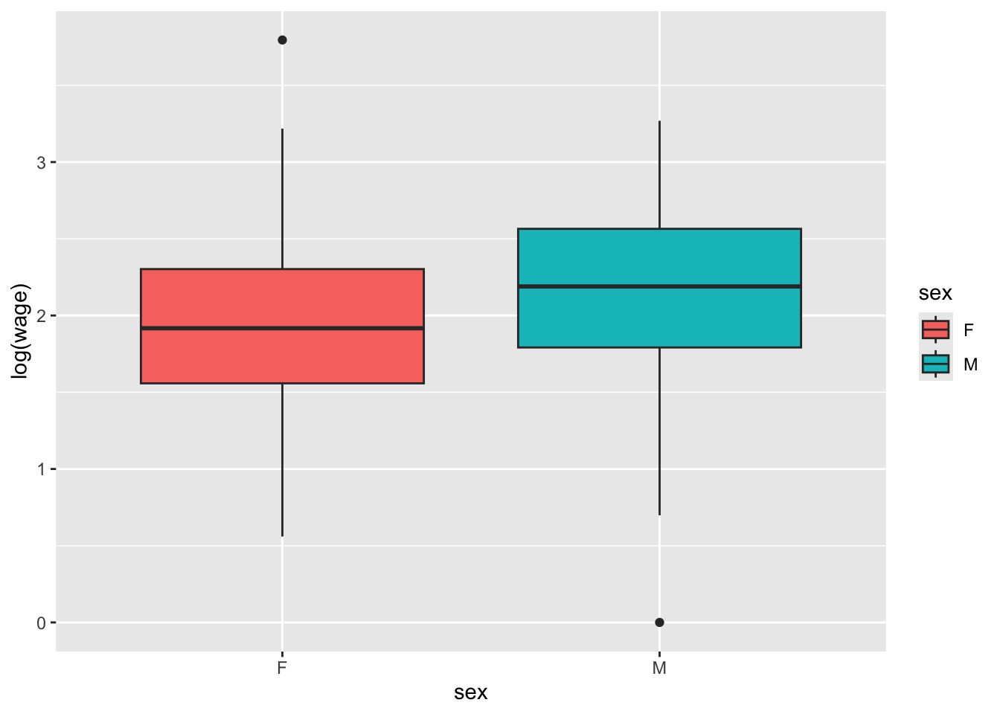
箱ひげ図の箱は第 1 四分位点と第 3 四分位点で構成され, 箱の中の点は中央値である. ひげの長さは箱の長さの 1.5 倍が基本である. 上側のひげは第 3 四分位点から箱の長さの 1.5 倍加えた値と最大値を比較して小さいほうの値である. 下側のひげは第 1 四分位点から箱の長さの 1.5 倍引いた値と最小値を比較して大きいほうの値である. ひげの長さから外れる値は黒丸で表示される. 女性には上側に外れ値が男性は下側に外れ値が存在する.
点の散らばりも加えるためには gf_dotplot を実施する.
gf_boxplot(log(wage) ~ sex, fill = ~sex, data = CPS85, outlier.color = NA) |>
gf_dotplot(binaxis = "y", stackdir = "center", alpha = 0.5, binwidth = 0.1)
外れ値が二重にならないように最初のオプションにoutlier.color = NA を加える.
セクターごとの箱ひげ図も可能である.
gf_boxplot(log(wage) ~ sex | sector, fill = ~sex, data = CPS85)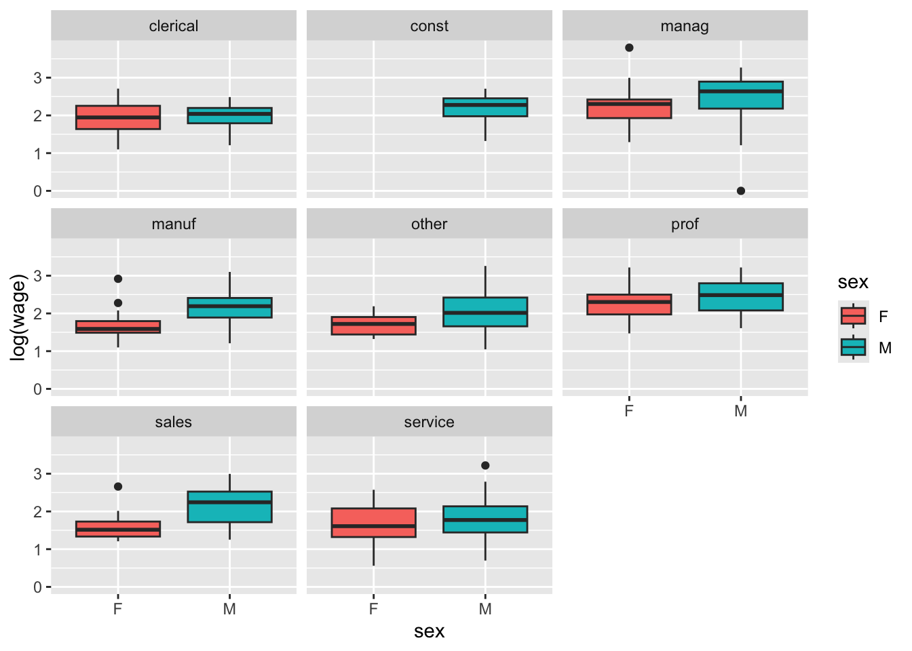
1.4 2 つの数量変数
データフレイム CPS85 の変数 wage および educ を考える. どちらも数量変数である.
両者の関係を示すと特性値として 標本共分散 がある. 標本サイズ \(N\) のデータ \(\{x_i,y_i\}_{i=1}^N\) について, 標本平均 \(\bar{x},\;\bar{y}\) を用いて, 標本共分散 \(s_{xy}\) は以下に定義できる．
\[ s_{xy}=\frac{1}{N-1}\sum_{n=1}^N (x_n-\bar{x})(y_n-\bar{y}) \]
これは R において cov で計算できる.
cov(wage ~ educ, data = CPS85)
#> [1] 5.133282また 標本相関係数 は以下のように定義できる. \[ r_{xy}=\frac{s_{xy}}{s_x s_y}=\frac{\sum_{n=1}^N (x_n-\bar{x})(y_n-\bar{y})} {\sqrt{\sum_{n=1}^N (x_n-\bar{x})^2}\sqrt{\sum_{n=1}^N (y_n-\bar{y})^2}} \]
これは R において cor で計算できる.
cor(wage ~ educ, data = CPS85)
#> [1] 0.38192212 つのデータは散布図で表すことができる.
gf_point(log(wage) ~ educ, data = CPS85)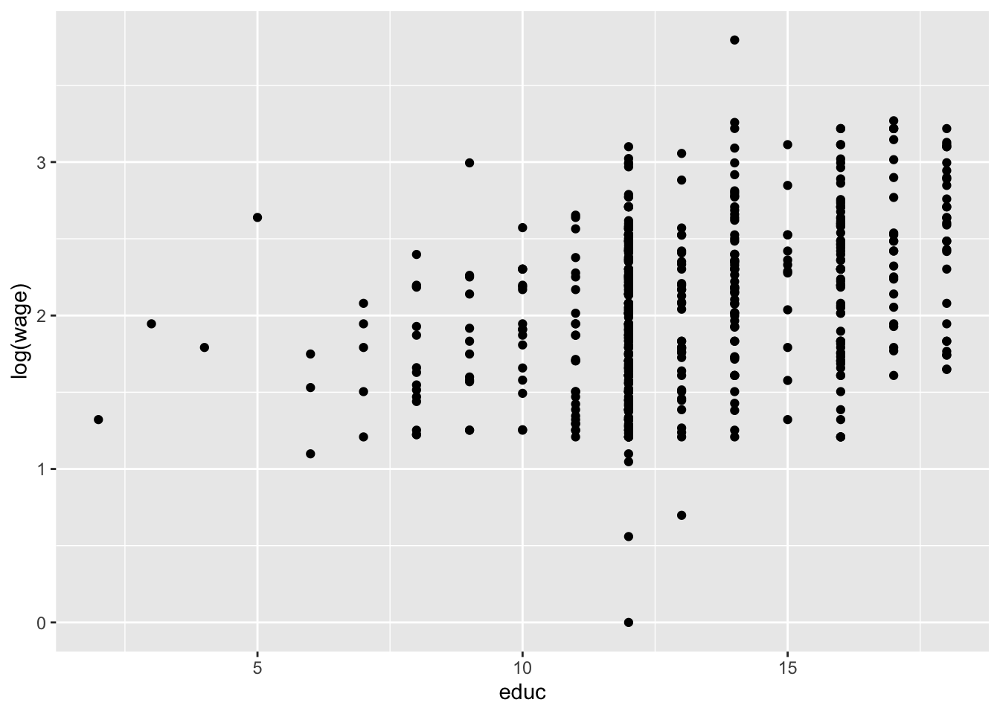
sex を性別を示すカテゴリカルデータとする. カテゴリカル・データごとの散布図はパネルごとなら以下によって実行される.
gf_point(log(wage) ~ educ, color = ~sex, alpha = 0.5, data = CPS85)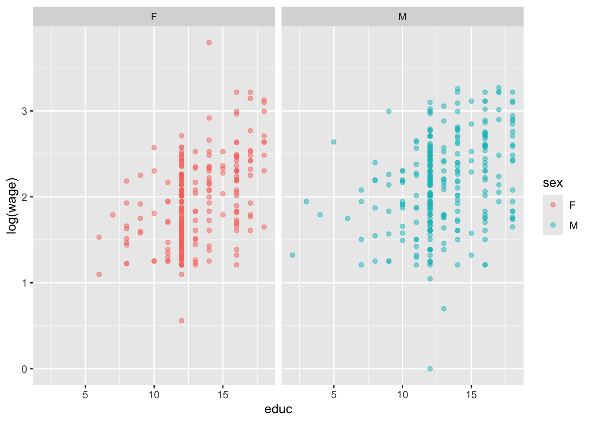
データが重なっているため, alpha=0.5 と半透明としているが, それでも上手く表示されていない.
別々のパネルで表示するなら以下を実行する.
gf_point(log(wage) ~ educ | sex, color = ~sex, alpha = 0.5, data = CPS85)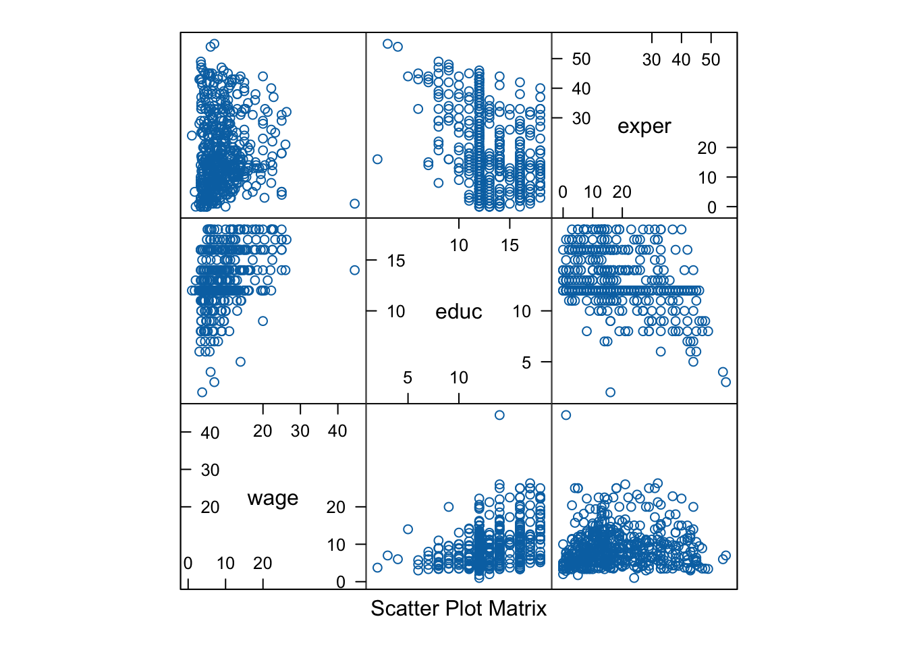
exper を経験年数を示す数量データとする. 3 つの共分散は次のように実行する.
CPS85 |> select(wage, educ, exper) |> cov()
#> wage educ exper
#> wage 26.410316 5.133282 5.538773
#> educ 5.133282 6.840174 -11.418801
#> exper 5.538773 -11.418801 153.257222対角要素は分散である.
3 つの相関係数は次のように実行する.
CPS85 |> select(wage, educ, exper) |> cor()
#> wage educ exper
#> wage 1.00000000 0.3819221 0.08705953
#> educ 0.38192207 1.0000000 -0.35267645
#> exper 0.08705953 -0.3526764 1.00000000それを図示するには lattice パッケージの splom を使えばよい.
CPS85 |> select(wage, educ, exper) |> splom()
なお, 一つの要素を対数変換するには以下を実行する.
CPS85 |> mutate(lwage = log(wage)) |> select(lwage, educ, exper) |> splom()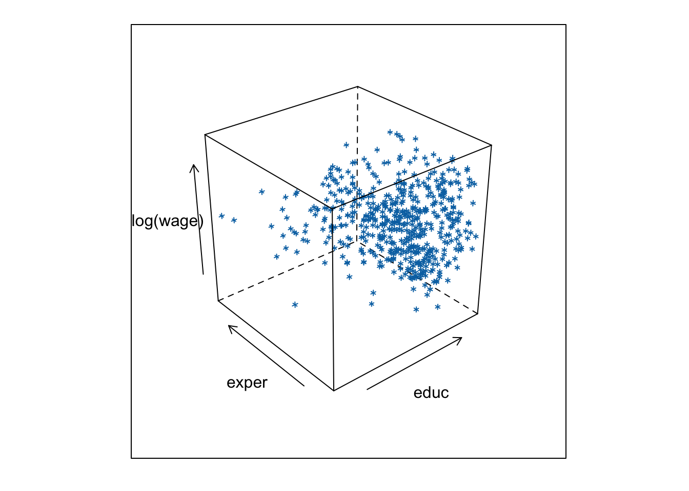
3 変数の散布図はlattice パッケージの cloud で実行できる.
cloud(log(wage) ~ educ + exper, data = CPS85)
ただ非常に見づらい.